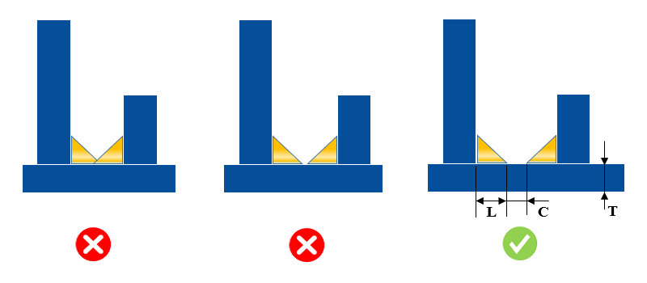

このルールは、設定された溶接長さ（Weld Length）およびクリアランス値（Clearance value）を考慮して、溶接が重なっている可能性のあるケースをチェックします。
隣接する溶接同士のクリアランスが不十分な場合、溶接形状に歪みが発生する可能性が高くなります。多くの場合、溶接の重なりによって品質エンジニアが溶接の正しいパラメータを確認することが困難となり、遅延につながります。
ユーザーは、板厚の範囲および溶接長さの範囲に加えて、許容されるクリアランス値を構成できます。
板厚およびそれぞれの溶接長さに基づき、設計者は2つの溶接が結合しないように、溶接間に十分なクリアランスを確保する必要があります。
このルールの実行において、解析中に考慮されるのはすみ肉溶接（fillet weld）のみです。
板から板への交差するシーム（seam）については、すべてのシームに溶接が存在するものと仮定し、解析対象として考慮されます（板厚は除く）。
解析は溶接アセンブリに対して実行されます。これは、すべてのファスナーがDFMProハードウェアデータベースに追加されていることを条件として、（ファスナーを除く）すべてのパーツが溶接コンポーネントとして扱われることを意味します。
すみ肉溶接の幅（Width）と長さ（Length）は同一であると仮定します。
ルール構成ダイアログボックスで指定された板厚範囲に対して、DFMProはルール検証のために利用可能な最小の板厚を考慮します。
DFMProは板厚が一定であり、変動の対象ではないと仮定します。

ここで、
L = Weld Length "溶接長さ"
T = Plate Thickness "板厚"
C = Clearance between Two Welds "2つの溶接間のクリアランス"